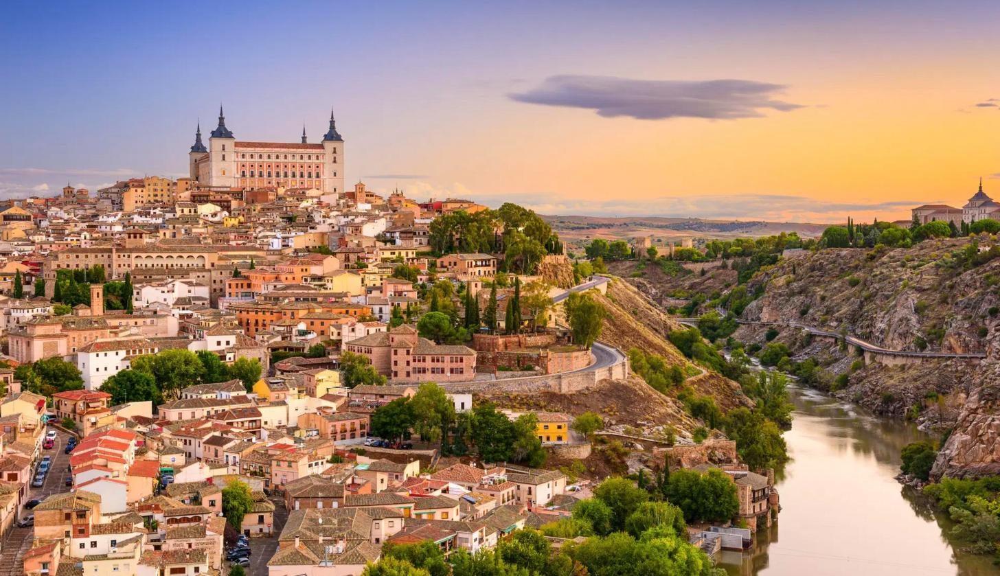
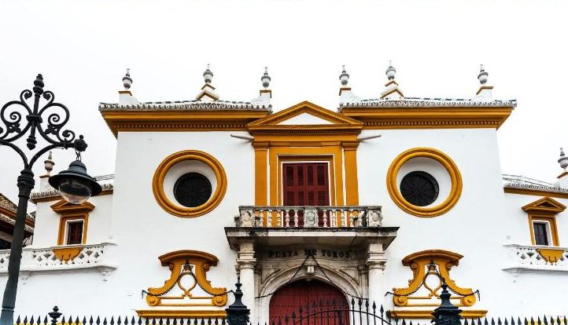
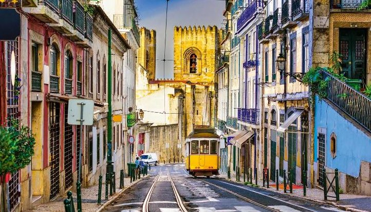
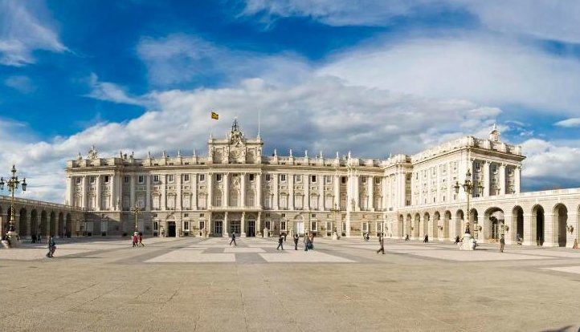
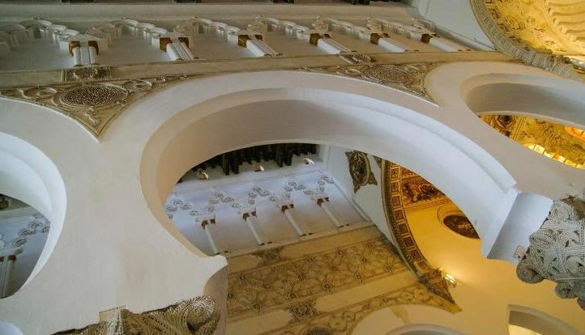
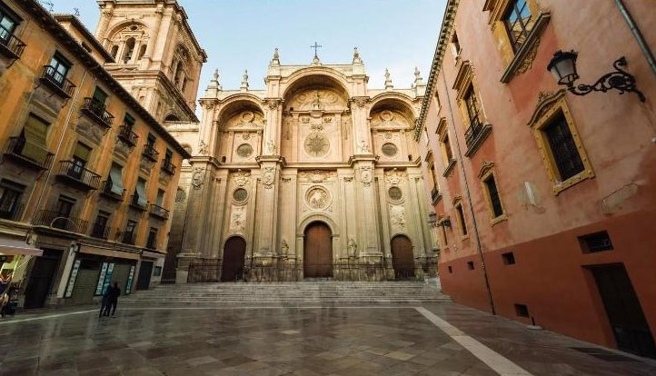
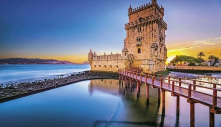

dzień1
Przylot do Hiszpanii
📍 Malaga, Costa del Sol
Na lotnisku w Katowicach trzeba być 2 godziny przed wylotem. Po wylądowaniu w Maladze autokar zawozi grupę do hotelu. Wieczorem kolacja i nocleg.

Sewilla, Lizbona, Fatima, Madryt, Toledo i Granada
Dotknij mapy, żeby ją powiększyć.
Kolejność zwiedzania może się nieco zmienić — o szczegółach decyduje pilot na miejscu.
📍 Malaga, Costa del Sol
Na lotnisku w Katowicach trzeba być 2 godziny przed wylotem. Po wylądowaniu w Maladze autokar zawozi grupę do hotelu. Wieczorem kolacja i nocleg.

📍 Sewilla
Złota Wieża nad rzeką Gwadalkiwir, słynna arena walk byków, park Marii Luizy z ogromnym Placem Hiszpańskim i kręte uliczki dawnej dzielnicy Santa Cruz. Z daleka widać wieżę Giralda przy katedrze, w której spoczywa Krzysztof Kolumb.
🚌 po zwiedzaniu długi przejazd do Portugalii — nocleg późnym wieczorem w okolicy Lizbony

📍 Cabo da Roca · Sintra · Lizbona
Rano przylądek Cabo da Roca — najdalej na zachód wysunięty skrawek lądu w Europie, wysoko nad oceanem. Potem Sintra, bajkowe miasteczko w zielonych górach, z dawnym pałacem królewskim. Po południu Lizbona: zamek św. Jerzego, dzielnica Belém z klasztorem Hieronimitów i Pomnikiem Odkrywców.

📍 Fatima → zachodnia Hiszpania
Sanktuarium w Fatimie: bazylika Matki Boskiej Różańcowej, w której są groby świętych pastuszków Franciszka i Hiacynty. Po południu przejazd z powrotem do Hiszpanii, na nocleg w regionie Estremadura.

📍 Madryt
Rano przyjazd do Madrytu. Pałac Królewski, elegancki bulwar Paseo del Prado przy słynnym muzeum malarstwa, plac Puerta del Sol w samym środku miasta i Plac Hiszpański z pomnikiem Cervantesa, Don Kichota i Sancho Pansy.

📍 Toledo → Granada
Toledo, dawna stolica Hiszpanii, leży na skale nad zakolem rzeki Tag. W kościele św. Tomasza wisi słynny obraz El Greca, jest też dawna synagoga z białymi łukami, główny plac i potężny Alkazar. Po południu przejazd do Granady.

📍 Granada
Spacer po dawnym arabskim bazarze, przy katedrze i Kaplicy Królewskiej. Najważniejszy punkt dnia to Alhambra — wspaniały pałac dawnych władców arabskich, z dziedzińcami, fontannami i ogrodami Generalife. Na koniec stara dzielnica Albaicín z widokiem na Alhambrę i góry Sierra Nevada. Wieczorem przejazd w okolice Malagi.
📍 Malaga → Katowice
Wymeldowanie z hotelu, czas wolny i przejazd na lotnisko w Maladze. Lot do Katowic. Przy bardzo porannym wylocie śniadania nie ma.
Wylot z Katowic w poniedziałek albo w piątek, powrót po 8 dniach w ten sam dzień tygodnia. Cena jest za jedną osobę, gdy w pokoju są 2 osoby.

Portugalia i GalicjaLizbona, Porto, Santiago de Compostela, Fatima — 8 dni, wylot z Katowic.